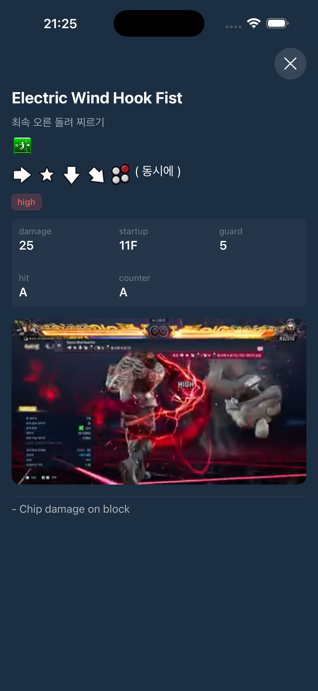
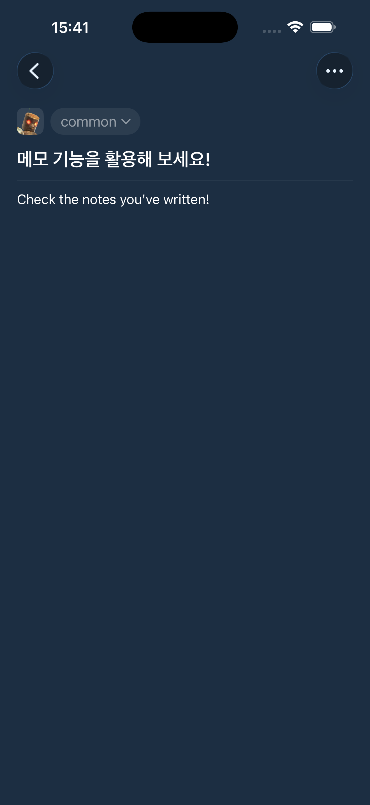

게임에서 반복해서 찾는 기술 정보를 앱으로 정리했습니다. 기획부터 개발 · 배포 · 운영까지 맡았고, 출시 이후 영어 지원 요청과 데이터 · 이미지 로딩 문제를 기능과 구조 개선으로 연결했습니다.
담당 범위
- 초기 아키텍처·데이터 연동·캐싱·메모 구현
- 사용자 요청에 따른 영문 표시와 탐색 화면 개선
- AI를 활용한 영상·필터 기능과 데이터 운영 도구 개발
메모와 사용자 데이터 · 캐릭터별 메모 작성·수정·삭제, 검색·고정과 백업·복원 흐름을 다뤘습니다. 기술 데이터 캐시 갱신과 사용자 메모 보존을 구분합니다.
탐색과 영상 · 커맨드를 아이콘으로 표시하고 기술명·별명 검색을 지원합니다. 후속 영상 재생과 필터 기능은 AI를 활용해 구현했습니다. 최신 개발 기능과 App Store에 배포된 버전은 구분합니다.
이 경험에서 남은 점 · 출시 후에는 화면 기능뿐 아니라 데이터 수정과 영상 연결 같은 운영 작업도 반복됩니다. 앱과 운영 도구를 함께 개선하며, 사용자 요청과 운영 제약을 다음 변경의 기준으로 삼았습니다.
01DATA & OFFLINE매번 받던 기술 데이터를, 버전이 바뀔 때만 갱신
같은 기술 목록을 다시 열어도 서버에서 전체 데이터를 받아왔습니다. 반복 로딩을 줄이면서 최신 데이터도 유지해야 했습니다.
- 화면 요청
- Repository
- 버전 확인
- Core Data 재사용 / 원격 갱신
제가 한 작업
- 서버 데이터 버전과 로컬 버전을 비교하고, 캐시가 비었거나 버전이 바뀌면 Supabase 데이터를 받아 Core Data에 저장했습니다.
- 데이터 출처와 갱신 판단은 Repository 안에 두고, ViewModel은 Repository Protocol에 의존하도록 분리했습니다.
- DI Container와 In-memory Core Data를 사용해 데이터 계층을 테스트할 수 있도록 구성했습니다.
달라진 점
유효한 캐시가 있으면 저장 데이터를 재사용하고 오프라인에서도 기술 정보를 볼 수 있습니다.
데이터 확보 경로 변경 전후
원격 전체 조회와 버전 확인 후 로컬 재사용 경로를 비교한 코드 측정값입니다.
02IMAGE LOADING스크롤 중 끊기는 이미지 요청을 화면 밖으로 이동
UIKit 셀 안의 SwiftUI task가 셀 생명주기에 따라 취소되며 이미지 로딩이 중단됐습니다. 같은 이미지의 반복 요청도 발생했습니다.
- 이미지 요청
- 메모리 캐시
- 디스크 캐시
- 필요한 경우 원격 조회
제가 한 작업
- UIHostingConfiguration의 셀과 이미지 요청의 생명주기를 구분하고 로딩 책임을 ViewModel과 캐시 관리 흐름으로 옮겼습니다.
- 메모리 캐시, 디스크 캐시, 원격 조회 순서로 이미지를 찾도록 구성했습니다.
- 이후 Supabase 전송량 무료 한도 초과를 겪고 약 40개 캐릭터 이미지를 Asset에 포함하도록 수정했습니다.
달라진 점
기기에 저장한 이미지를 재사용하도록 바꿨습니다. 캐싱 도입과 이후 Asset 전환은 서로 다른 시점의 개선입니다.
원격 다운로드와 기기 캐시 재사용 비교
반복 원격 다운로드와 기기 캐시 재사용 경로를 비교한 코드 측정값입니다. 이후 Asset 전환의 측정값과 구분합니다.
03LOCALIZATION영문 DB를 따로 만들지 않고 영어 지원 요청에 대응
한국어 기술 데이터 안에는 게임 커맨드와 설명이 섞여 있었습니다. 영문 DB를 추가하면 두 원본을 함께 관리해야 했습니다.
- 한국어 원본
- 커맨드 / 설명 분리
- 변환 규칙
- 영문 표시
제가 한 작업
- 커맨드 토큰과 설명을 분리하고, 사전과 정규식 규칙으로 설명을 영문 표시로 변환했습니다.
- 커맨드 표기는 유지하고 반복 변환 결과는 캐시했습니다.
- XCTest로 주요 변환 규칙을 확인하고 한국어·영어 UI와 탐색 기능을 연결했습니다.
달라진 점
한국어 원천 데이터를 유지하면서 영어 표시를 지원했습니다. 도입 전후 월평균 해외 다운로드는 45건에서 138건으로 관찰됐습니다.
App Store Connect 도입 전후 관찰값이며 번역 기능만의 효과로 단정하지 않습니다.
04AI-ASSISTED OPERATIONSCSV·터미널 작업을 눈으로 확인하는 운영 도구로 전환
기술 데이터를 CSV로 수정하고 명령으로 DB에 반영하는 작업, 영상 이름과 기술을 대조하는 작업이 번거로웠습니다.
- CSV 편집 / 영상 정리
- 후보 대조·수정
- 변경 미리보기
- DB 반영
제가 한 작업
- 기술 수정·검증·반영을 브라우저에서 처리하도록 AI를 활용해 로컬 대시보드를 만들었습니다.
- 영상 녹화와 이름 OCR, 다운스케일링을 자동화하는 작업에도 AI를 활용했습니다.
- R2 영상 목록과 기술 데이터를 대조하고, 이름 매칭 후보 확인·수동 수정·DB 반영을 화면에서 처리하도록 했습니다.
달라진 점
기술 수정과 반영, 이름 매칭 오류 확인 등 운영 작업을 시각화해 더 간단하게 처리하고 있습니다.
영상 파일은 Cloudflare R2에, 기술과 영상의 연결 정보는 DB에 보관합니다. AI 보조 구현 경험이며 작업 시간 절감률이나 오류 감소율은 측정하지 않았습니다.
영상으로 확인하고, 메모로 기록하기
기술 상세 화면에서 동작 영상을 확인하고, 캐릭터별 메모로 학습 내용을 기록합니다.

기술 영상 재생

캐릭터별 메모
함께 구현한 기능
캐릭터별 메모 작성·수정·삭제, 검색·고정과 백업·복원 흐름을 다뤘습니다. 기술 데이터 캐시 갱신과 사용자 메모 보존을 구분합니다.
커맨드를 아이콘으로 표시하고 기술명·별명 검색을 지원합니다. 후속 영상 재생과 필터 기능은 AI를 활용해 구현했습니다. 최신 개발 기능과 App Store에 배포된 버전은 구분합니다.
출시 후에는 화면 기능뿐 아니라 데이터 수정과 영상 연결 같은 운영 작업도 반복됩니다. 앱과 운영 도구를 함께 개선하며, 사용자 요청과 운영 제약을 다음 변경의 기준으로 삼았습니다.